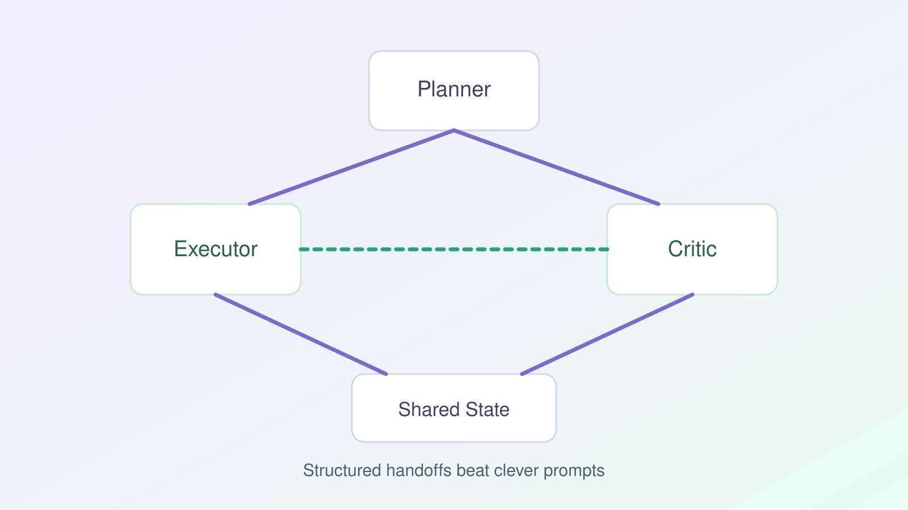

Multi-Agent Orchestration Without Chaos

Multi-agent setups are easy to overbuild. If every problem gets three agents, a router, and dynamic memory, you will spend more time debugging handoffs than shipping product value.
The pattern that works most often is a constrained triad: Planner, Executor, and Critic.
Roles with strict boundaries
- Planner: decomposes task into numbered steps.
- Executor: performs tool calls and returns evidence.
- Critic: checks evidence against the original goal and policy.
Do not let any role absorb another role's responsibility. Blurred roles create hidden coupling and regressions.
Message contract
Use a typed envelope for every inter-agent message:
intentinputsevidencestatusnext_action
Free-form prose between agents is convenient at first and expensive later.
Failure handling
Define exactly what happens on these events:
- Tool timeout
- Invalid tool payload
- Contradictory user requirements
For each, specify retry policy, fallback behavior, and escalation to human review.
When single-agent is enough
If your agent does one short task with one or two tools, keep a single agent plus a review pass. Multi-agent architecture only pays off when tasks are long-running, stateful, and high-stakes.
Good orchestration is not about agent count. It is about clear control flow and observable decisions.